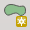
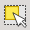

3.3. Základní pravidla pro aktualizaci na QWAT
S každou vytvořenou nebo odstraněnou entitou uložte, abyste zjistili, zda se zobrazí chybová zpráva, a mohli tak snáze vyřešit tyto vstupní chyby, aniž byste museli hledat, který objekt je která chyba.
Když změníte kategorii objektu, nezapomeňte zavřít režim úprav ostatních kategorií a před dalším pokračováním se ujistěte, že bylo vše aktualizováno.
Jako u každého počítačového programu nezapomeňte svůj projekt pravidelně ukládat.
3.3.1. Základní příkazy
Chcete-li vytvořit nové objekty, použijte tlačítko „přepnout do režimu úprav“

Pokud se jedná o kategorii typu bodu, budete mít následující symbol:

Pokud se jedná o kategorii typu čáry, budete mít následující symbol:

Enfin, je nejlepší kategorie polygonu, vhodný pro symboly:

Chcete-li uložit pouze poslední úpravy vybrané kategorie, klikněte na tlačítko „Uložit změny“.
Chcete-li otevřít různé masky našich objektů, použijte tlačítko „identifikovat entity“.
K výběru objektů použijte tlačítko
Chcete-li zrušit výběr objektů, použijte tlačítko

Chcete-li odstranit vybrané objekty, použijte tlačítko
Tyto informace nenahrazují čtení příručky QGIS <https://docs.qgis.org/latest/fr/docs/user_manual/working_with_vector/editing_geometry_attributes.html>, která podrobně vysvětluje jednotlivé příkazy.